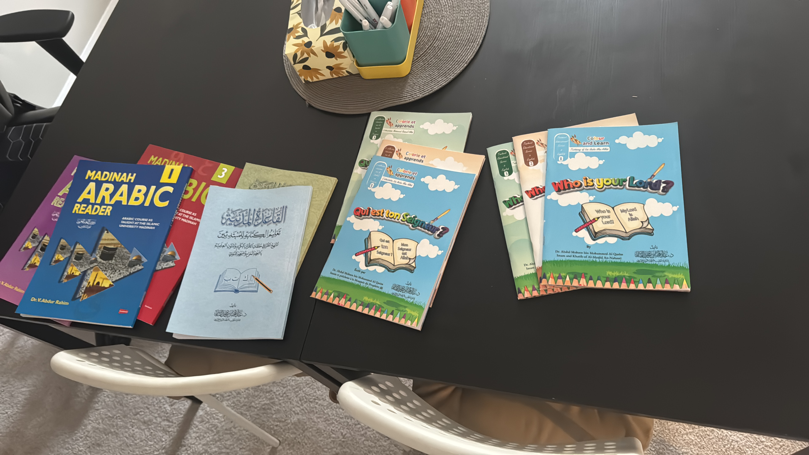
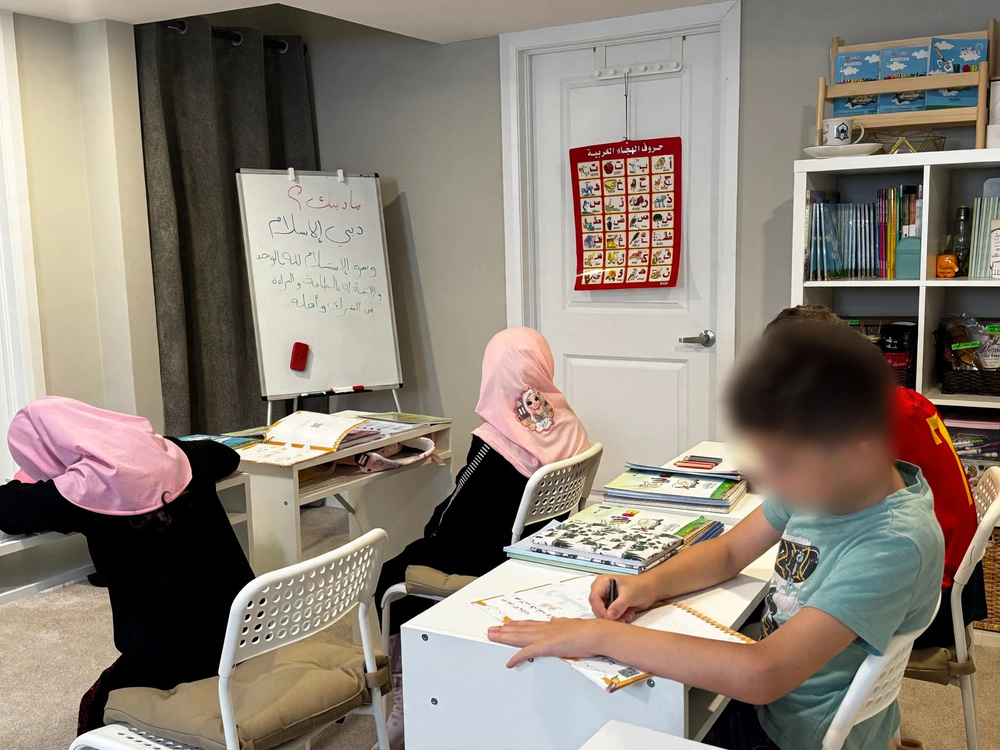
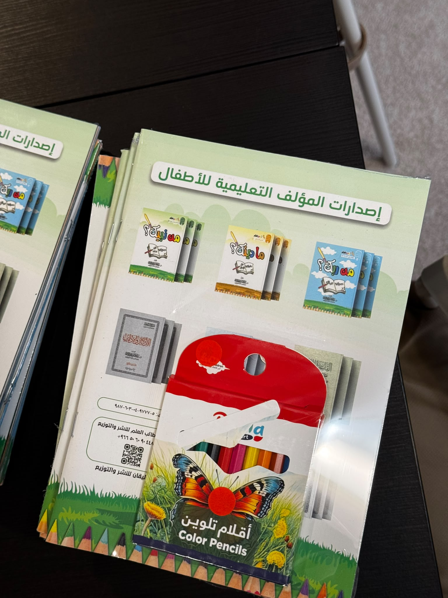

Co-Founder, Academy Director & Islamic Studies Educator
Ustadh Emad
Ustadh Emad brings together Arabic and Nahw, Tajweed, Islamic Studies, academy direction, digital systems, and long-standing community education experience.
Qur’an · Arabic · Islamic Studies
Structured Qur’an, Arabic and Islamic Studies for children, youth and adults — in Ottawa and online.
In-person in East Ottawa Online worldwide

Programs
Each pathway has a clear purpose. Together, they connect careful recitation, Arabic understanding, Islamic foundations, and learning with adab.
Correct pronunciation, fluency, Tajweed foundations, and steady recitation practice.
Reading, writing, vocabulary, and Nahw foundations for Arabic and non-Arabic speakers seeking stronger access to Islamic texts.
A warm early-learning path for Arabic letters, short surahs, manners, and foundational knowledge.
Belief, worship, manners, and daily practice taught with clarity for students and families.

The Al-Madinah Path
Placement considers the learner’s age, current level, goals, and schedule. Teaching then connects instruction, correction, practice, and review in a calm, coherent rhythm.
Identify the right starting point.
Build knowledge with clear instruction.
Strengthen skills through repetition.
Correct carefully and retain learning.
Move forward with steady confidence.
Student Life
Classes are structured without feeling impersonal. Students work with Qur’an, Arabic, and Islamic Studies materials in an environment shaped by preparation, respectful correction, and adab.
See Student Life


Educational Leadership
Two complementary areas of responsibility bring together careful teaching, Islamic learning, community experience, and organized academy leadership.
Co-Founder, Academy Director & Islamic Studies Educator
Ustadh Emad brings together Arabic and Nahw, Tajweed, Islamic Studies, academy direction, digital systems, and long-standing community education experience.
Co-Founder & Lead Qur’an & Islamic Studies Educator
With more than 25 years in Qur’an education, Ustadhah Ayah leads learning in Qur’an, Tajweed, Qira’at, memorization, and Islamic Studies, supported by ijazat and patient, careful teaching.
Ottawa + Online
Students can learn in person in East Ottawa or online from anywhere. Programs welcome children, youth, and adults, including learners who do not speak Arabic at home.
Placement
Tell us the learner’s age, current level, and goals.